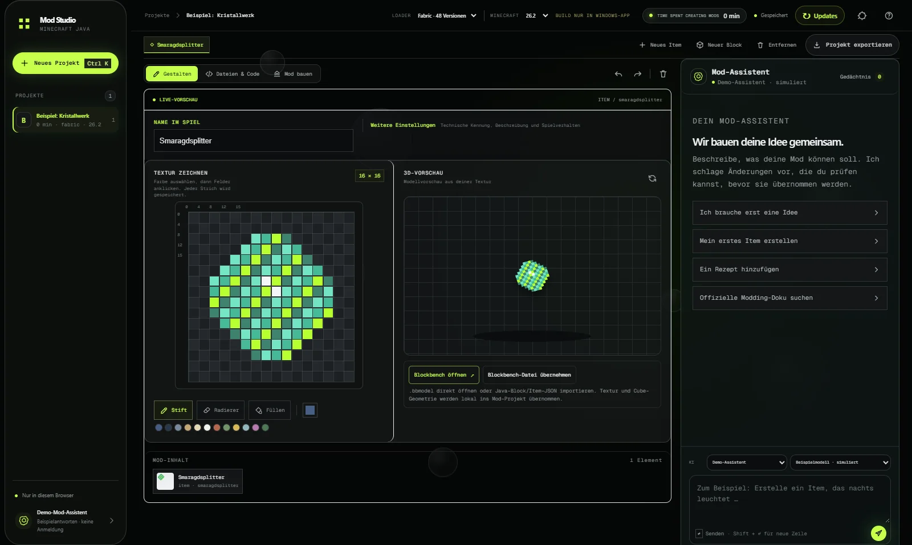
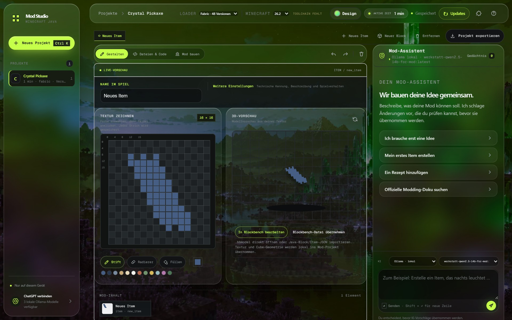
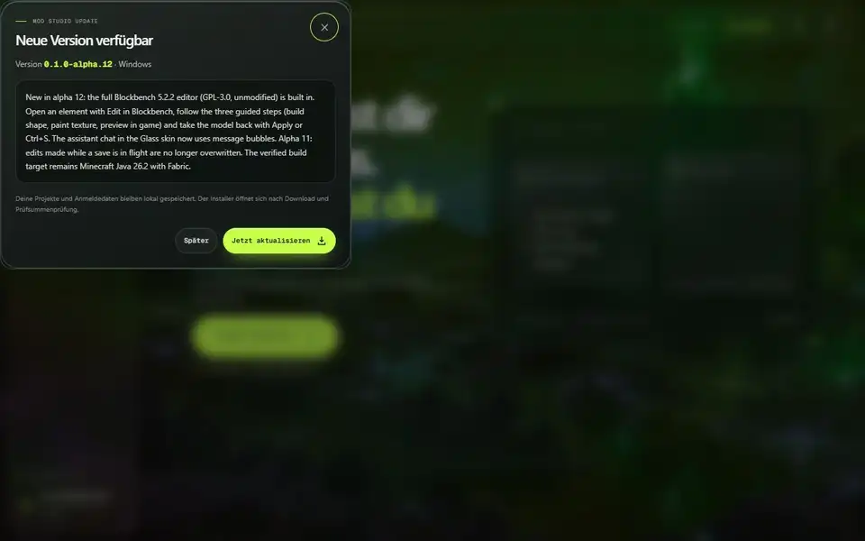
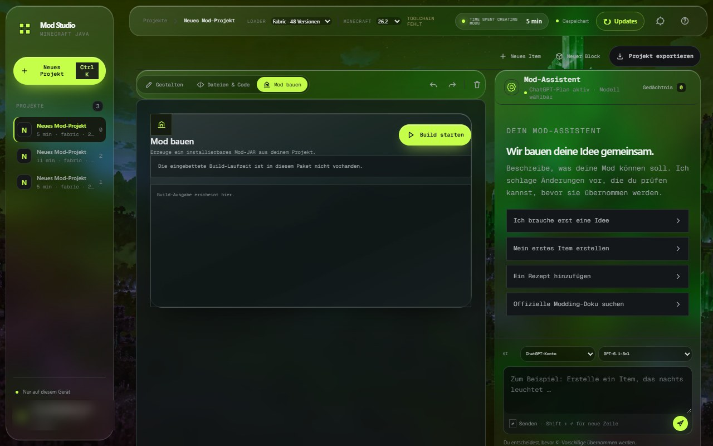

🎨
Pixel by pixel
Paint, fill, erase and recolour. The sketch stays linked to the project's saved texture.
TextureDescribe, paint and edit your mod in a local workbench. The sketch stays editable, Java source comes from your project, and AI stays optional.


Start screen and mod editor with texture painting, 3D preview and the assistant, captured from the real app with the Glass skin.

Every area belongs to the same local mod project: properties, texture, preview and generated source stay together.
Paint, fill, erase and recolour. The sketch stays linked to the project's saved texture.
TextureOpen .bbmodel files or import Java block/item JSON. Texture and cube geometry are imported locally.
View and edit your mod's properties, Java source and resources right in the workbench.
SourceBuild a Fabric JAR for the enabled Minecraft target or export the source project. Setup and portable app bundle Node.js, JDK and Gradle.
Build
Version-aware explanations, official docs search on request and a local, editable memory of your preferences. ChatGPT or Ollama.
AI optionalA tiny slice of the texture editor. The full interface with projects, 3D preview and assistant runs in the browser demo.
Click or drag to paint, right-click to erase. In the real editor every stroke lands directly in the project texture.
Existing features and next goals are clearly separated. Loader and version compatibility is never faked.
Early alpha. Details in the project status and roadmap.
The setup installs the app and runtimes into %LOCALAPPDATA%\Programs\ModStudio. Projects and credentials stay local; the server binds to 127.0.0.1.
Modspire 0.3.3 already includes Mod Studio: open it from any of its five layouts, no separate installation.
Go to Modspire →npm install npm run css:build npm start